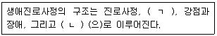
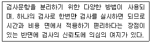
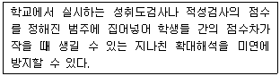
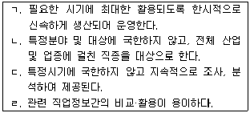
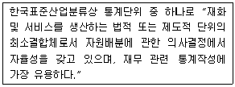
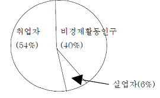
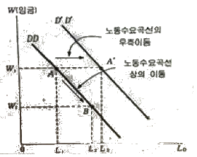
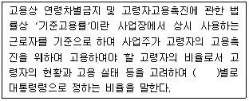

1과목: 직업상담학
1. 특성-요인 직업상담에서 일련의 관련 있는 또는 관련 없는 사실들로부터 일관된 의미를 논리적으로 파악하여 문제를 하나씩 해결하는 과정은?
2. 다음 ( ) 안에 알맞은 용어로 바르게 짝지어진 것은?

3. 직업상담의 기본 원리에 관한 설명으로 틀린 것은?
4. 직업상담시 내담자의 표현을 분류하고 재구성하기 위해 사용하는 역설적 의도의 원칙이 아닌 것은?
5. 자기인식이 부족한 내담자를 사정할 때 인지에 대한 통찰을 재구조화하거나 발달시키는데 적합한 방법은?
6. Crites의 직업선택분류 유형에서 비현실형에 해당하는 것은?
7. Roe는 가정의 정서적 분위기, 즉 부모와 자녀간의 상호작용을 세가지 유형으로 구분하였는데 이에 해당하지 않는 것은?
8. 인지적 왜곡의 유형 중 상황이 긍정적인 양상을 여과하는데 초점이 맞추어져 있고 극단적으로 부정적인 세부사항에 머무르는 것은?
9. 내담자중심 상담 이론의 특징이 아닌 것은?
10. 발달적 직업상담에서 Super가 제시한 평가의 종류 중 내담자가 겪고 있는 어려움이나 직업상담에 대한 내담자의 기대를 평가하는 것은?
11. 정신역동적 직업상담에서 Bordin이 제시한 상담자의 반응범주에 해당하지 않는 것은?
12. 직업상담 중 대본분석 평가항목이나 질문지를 사용하고, 게임과 삶의 위치분석, 가족모델링등의 상담기법을 활용하는 것은?
13. 자기보고식 가치사정법이 아닌 것은?
14. 직업상담 시 활용할 수 있는 측정도구에 관한 설명으로 틀린 것은?
15. 행동주의상담에서 문제행동에 대한 대안행동이 거의 없거나 효과적인 강화 인자가 없을 때 유용한 기법으로써 파괴적의고 폭력적인 행동을 수정하는데 효과적인 것은?
16. 직업상담의 과정을 순서대로 바르게 나열한 것은?
17. 내담자 중심 직업상담에서 상담자가 지녀야 할 태도 중 내담자로 하여금 개방적 자기탐색을 촉진하여 그가 지금-여기에서 경험하는 감정을 자각하도록 하는 요인은?
18. 직업상담사의 윤리강령에 관한 설명으로 가장 거리가 먼 것은?
19. 내담자에게 선정된 행동을 연습하거나 실천토록 함으로써 내담자가 계약을 실행하는 기회를 최대화 하도록 도와주는 것은?
20. 진로시간전망 검사지를 사용하는 주요 목적이 아닌 것은?
2과목: 직업심리학
21. 생애 직업발달에 관한 설명으로 틀린 것은?
22. 여러 변인들 간의 상호관련성을 분석한 다음 분석된 상호관련성을 기초로 각 변인들이 공통적으로 측정하고 있는 잠재특성을 밝히기 위해 사용되는 것은?
23. 경력진단검사에 관한 설명으로 틀린 것은?
24. 성격 5요인(Big-5) 검사의 하위요인으로 틀린 것은?
25. Erikson의 심리사회적 발달이론에서 청소년기에 해당하는 과업은?
26. GATB 직업적성검사의 하위검사 중에서 둘 이상의 적성을 검출하는데 이용되는 검사가 아닌 것은?
27. 속도 검사(speed test)에서 작용해서는 안되는 신뢰도는?
28. Holland의 진로발달이론이 기초하고 있는 4가지 가정에 포함되지 않는 것은?
29. Ginzberg가 제시한 진로발달단계에 해당되지 않는 것은?
30. Holland가 제시한 육각형 모델과 대표적인 직업유형을 바르게 짝지은 것은?
31. 금전적 보상의 직무동기를 낮출 수도 있다고 설명하는 이론은?
32. 동기의 강도는 어떤 결과에 부여하는 가치와 특정한 행동이 그 결과를 가져다 줄 것이라고 믿는 것을 곱한 값과 같다고 설명하는 이론은?
33. 다음은 해당하는 계수는?

34. 검사-재검사를 통해 신뢰도를 추정할 경우 충족되어야 할 조건이 아닌 것은?
35. 교과과정을 개발하는데 활용되며, 교육훈련을 목적으로 교육목표와 교육내용을 비교적 단시간 내에 추출하는데 효과적인 직무분석 방법은?
36. 다음에 해당하는 규준은?

37. 직업선호도 검사에 관한 설명으로 틀린 것은?
38. 개인관련 스트레스 요인인 A유형 행동을 보이는 사람의 특성으로 틀린 것은?
39. 직무명세서에 관한 설명으로 옳은 것은?
40. 경력개발의 초기단계에서 수행하는 중요과제가 아닌 것은?
3과목: 직업정보론
41. 공공직업정보의 일반적인 특성을 모두 고른 것은?

42. 단계별 일자리지원 프로그램인 취업성공패키지 사업에 관한 설명으로 틀린 것은?
43. 한국직업사전(2012)의 숙련기간에 대한 설명으로 틀린 것은?
44. 한국표준직업분류에서 포괄적인 업무에 대한 분류원칙에 해당하지 않는 것은?
45. 다음에서 설명하고 있는 것은?

46. 인구통계에서 “성비 1⑤”의 의미는?
47. 한국직업정보시스템(워크넷 직업 · 진로)에서 ‘나의 특성에 맞는 직업 찾기’ 방법이 아닌 것은?
48. 서비스분야 국가기술자격 종목별 응시자격기준으로 틀린 것은?
49. 통계청 경제활동인구조사의 주요용어에 대한 설명으로 틀린 것은?
50. 실기능력이 중요하여 필기시험이 면제되는 국가기술자격 기능사 종목이 아닌 것은?
51. 한국표준산업분류의 적용원칙에 관한 설명으로 틀린 것은?
52. 한국표준직업분류상 직업으로 볼 수 있는 활동은?
53. 워크넷(구직)에서 제공하는 채용정보 중 기업형태별 검색에 해당하지 않는 것은?
54. 인간이 복잡한 정보에 접근하게 되는 구조에 근거를 둔 이론으로 직업선택결정 단계를 전체단계, 계획단계, 인지부조화단계로 구분한 직업결정모형은?
55. 한국직업전망(2015)의 직업별 정보 구성체계에 해당하지 않는 것은?
56. 한국표준산업분류의 분류구조 및 부호체계에 관한 설명으로 옳은 것은?
57. 한국직업사전(2012) 작업환경에 대한 설명에서 위험내재에 포함되지 않는 것은?
58. 직업정보의 일반적인 평가 기준과 가장 거리가 먼 것은?
59. 다음 고용안정사업 중 성격이 다른 하나는?
60. 지역맞춤형 일자리 창출 지원사업의 목적과 가장 거리가 먼 것은?
4과목: 노동시장론
61. 노조가 임금인상 투쟁을 벌일 때, 고용량 감소효과가 가장 적게 나타나는 경우는?
62. 고임금 · 저인건비 전략에 대한 설명과 가장 거리가 먼 것은?
63. 던롭(Dunlop)이 노사관계를 규제하는 여건 혹은 환경으로 지적한 사항이 아닌 것은?
64. 립케(Ropke)의 인본적 경제(Humane economy)의 의미로 옳은 것은?
65. 보상적 임금격차의 발생 원인에 해당되지 않는 것은?
66. 이중노동시장에서 2차노동시장의 특징으로 가장 적합한 것은?
67. 실업률을 낮추기 위한 대책과 가장 거리가 먼 것은?
68. 임금교섭의 과학화 · 합리화를 위해 의존성이 높아져야할 부분으로 가장 적합한 것은?
69. 직무급을 도입하기 위한 전제조건과 가장 거리가 먼 것은?
70. 어느 국가의 생산가능인구의 구성비가 다음과 같을 때 이 국가의 실업률은?

71. 인적자본이론에 관한 설명으로 가장 거리가 먼 것은?
72. 필립스곡선은 어떤 변수 간의 관계를 설명하는 것인가?
73. 노동조합조직의 유지 및 확대에 유리한 순서대로 숍제도를 열거한 것은?
74. 개인의 노동공급시간 결정이 소득과 여가간의 무차별곡선과 예산선 간의 관계에서 이루어질 때, 다음 설명 중 틀린 것은?
75. 다음 노동수요곡선에 대한 설명으로 틀린 것은?

76. 힉스-마샬 법칙에 관한 설명으로 틀린 것은?
77. 임금체계를 구성하는 다음의 요소들 가운데 일반적으로 가장 중요시되는 항목은?
78. 노동력의 10%가 매년 구직활동을 하고 구직에 평균 3개월이 소요되는 경우 이 이유만으로도 연간 몇 %의 실업률이 나타나게 되는가?
79. 임금체계에 대한 설명으로 틀린 것은?
80. 산업혁명 이후 영국에서 가장 일찍 발달한 노동조합 형태는?
5과목: 노동관계법규
81. 남녀고용평등과 일·가정 양립 지원에 관한 법률상 차별에 해당하는 것은?
82. 남녀고용평등과 일 · 가정 양립 지원에 관한 법률상 출산전후휴가에 대한 지원에 관한 설명으로 틀린 것은?
83. 근로기준법상 사용하는 용어에 관한 설명으로 틀린 것은?
84. 다음 ( )안에 알맞은 것은?

85. 고용정책 기본법상 고용정책을 수립 · 시행할 때 실현되도록 하여야 할 기본원칙이 아닌 것은?
86. 다음 중 4주 동안을 평균하여 1주 동안의 소정근로시간이 15시간 미만인 근로자에게 적용되는 것은?
87. 헌법상 근로에 관한 설명으로 틀린 것은?
88. 남녀고용평등과 일 · 가정 양립 지원에 관한 법률의 목적에 해당하지 않는 것은?
89. 직업안정법상 직업소개의 원칙으로 틀린 것은?
90. 고용정책 기본법에 관한 설명으로 가장 적합한 것은?
91. 고용정책 기본법령상 대량고용변동이 있는 경우 신고의무가 발생하는 사업장은?
92. 근로자직업능력 개발법령상 직업능력개발훈련의 목적에 따라 구분되어지는 훈련이 아닌 것은?
93. 고용보험법상 심사 및 재심사의 청구에 관한 설명으로 틀린 것은?
94. 근로자직업능력 개발법상 직업능력개발훈련의 기본원칙에 해당하지 않는 것은?
95. 고용상 연령차별금지 및 고령자고용촉진에 관한 법률상 우선고용직종에 고령자와 준고령자를 우선적으로 고용하여야 할 의무가 있는 고용주체가 아닌 것은?
96. 직업안정볍령상 직업안정기관의 장이 수집 · 제공하여야 할 고용정보의 내용이 아닌 것은?
97. 근로자직업능력 개발법상 직업능력개발훈련 교사가 될 수 있는 사람은?
98. 근로기준법상 재해보상에 관한 설명으로 옳은 것은?
99. 근로기준법상 균등처우의 원칙에서 근로에 대한 차별이 금지되는 사유가 아닌 것은?
100. 고용상 연령차별금지 및 고령자고용촉진에 관한 법률상 고령자 기준고용률이 그 사업장의 상시근로자수의 100분의 2에 해당하는 사업은?